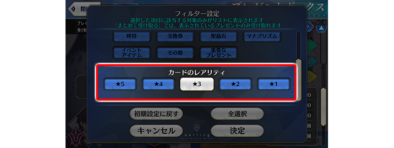
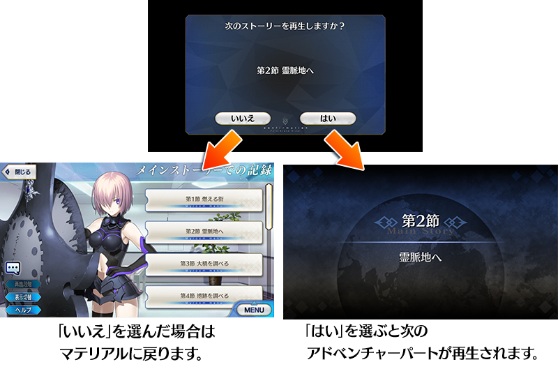

- 10/20
- 【來自迦勒底廣報局】關於10月的遊戲更新
非常感謝各位使用「Fate/Grand Order」。
來自迦勒底廣報局，告知關於預定2020年10月的下次遊戲更新。
以下介紹更新後反映的更新內容中，具有代表性的更新內容。
①有關禮物箱的修改
・在禮物箱畫面追加「卡片稀有度」篩選器
在禮物箱畫面的篩選器設定追加「卡片稀有度」的項目。

※開發中畫面。
・追加對應禮物箱保管數的圖示變化
禮物箱的剩餘保管數變成50個以下時（禮物箱的保管數變成350個以上時），修改成禮物箱的圖示會變化。
※開發中畫面。
②圖鑑(マテリアル)中修改成可連續播放文字冒險部份
圖鑑中，在文字冒險部份的播放結束時修改成可連續播放下個設定的文字冒險部份。
文字冒險部份的播放結束時，會顯示確認下個播放文字冒險部份的對話框，選「是(はい)」會接著播放，選「不是(いいえ)」會回到圖鑑。
※以SKIP鍵結束播放的情況，會不顯示對話框移動至圖鑑。

※開發中畫面。
以上為預定2020年10月實施的下次遊戲更新主要內容。
另外，今後也預定在期間限定活動和期間限定宣傳活動中，會有將通過主線關卡設為開放條件的情況。
無論如何，如果推進主線關卡的攻略會有所幫助。
今後也請多多指教「Fate/Grand Order」。